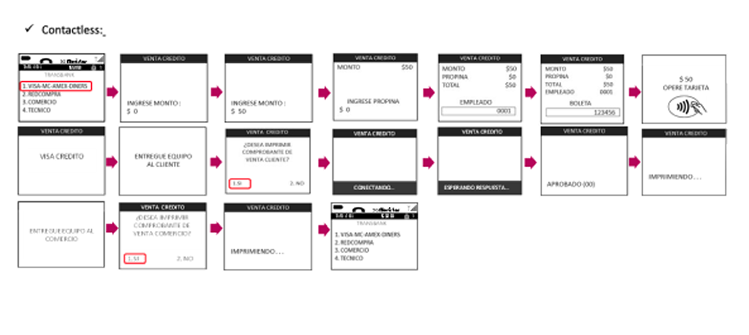

Desmontando el legado técnico:
La fricción en 400.000 terminales
Lideré una auditoría sobre el ecosistema Verifone 675, analizando un flujo de 2 millones de operaciones diarias para transformar una navegación lineal obsoleta en una infraestructura ágil y escalable.
Arquitectura Base
Documenté y desglosé los flujos transaccionales existentes para identificar la lógica de navegación lineal que limitaba la agilidad del sistema antes de nuestra intervención estratégica.
Mercado Nacional
Casuísticas de pago
Mapeo del flujo transaccional base antes de la optimización sistémica.

Revisión UX y Auditoría de Flujos
Utilicé la arquitectura base como punto de partida para una auditoría profunda. Mi objetivo fue identificar áreas críticas de fricción en las casuísticas de Crédito, Débito, Cuotas y Propina, transformando un diagnóstico estático en un plan de acción para la eficiencia transaccional.
Hallazgos de la Investigación
Durante la inmersión, detectamos que la falta de feedback visual en momentos críticos generaba una incertidumbre operativa. Los usuarios no lograban distinguir con rapidez el estado de la transacción, derivando en errores de manipulación del hardware.
Profundizamos en el comportamiento de los pagos con tarjeta y contactless, explorando casos de borde que el flujo original no contemplaba. Esto aseguró una experiencia consistente sin importar el método de entrada de datos.

Flujo creado a partir de auditoría UX
Sincronización Estratégica y Value Stream
Lideré la alineación entre los equipos de Producto y Stakeholders, integrando la visión de diseño con el Value Stream comercial para asegurar que cada decisión de interfaz respondiera directamente a un objetivo de negocio.
Alineación de Objetivos
Mi rol fue garantizar que la propuesta de diseño no solo resolviera problemas de usabilidad, sino que también fuera coherente con la estrategia comercial. Coordiné mesas de trabajo con los Product Owners para destilar las necesidades del negocio en requerimientos técnicos claros.
Facilitamos la comunicación entre equipos multidisciplinarios, asegurando que las expectativas comerciales estuvieran alineadas con la capacidad de ejecución técnica.
Mapa de sincronización entre objetivos de negocio y la arquitectura de información propuesta.
Definición de Capacidades Críticas
Tras el proceso de priorización en las mesas de agilidad, definimos seis ejes de intervención inmediata para el dispositivo Verifone 675. Estas soluciones fueron diseñadas para atacar los puntos de dolor con mayor impacto en la conversión y eficiencia del punto de venta.
Eliminar la selección manual de medio de pago (Crédito/Débito), permitiendo que el hardware identifique la tecnología de la tarjeta al contacto.
Rediseñar la lógica de selección de cuotas para reducir los pasos operativos y minimizar el error humano en transacciones complejas.
Integrar la solicitud de propina de forma orgánica antes de la confirmación del pago, agilizando el checkout en comercios de alta rotación.
Implementar un Header dinámico que informa el estado de conexión, batería y tipo de red, reduciendo la incertidumbre operativa del comercio.
Establecimos un sistema visual de alto contraste y tipografía optimizada para garantizar la legibilidad en pantallas de baja resolución.
Ajustamos la gestión de Time-outs y procesos de impresión de vouchers para asegurar que el sistema responda siempre bajo condiciones críticas.
Análisis de Viabilidad Técnica
Gestioné la auditoría de sistema para garantizar que cada mejora propuesta fuera implementable, asegurando la estabilidad del software bajo las restricciones reales de los terminales POS.
Evaluación Multidisciplinaria
Lideré el análisis técnico del flujo de pago, identificando las limitantes de hardware del Verifone 675. El foco fue validar qué interacciones críticas eran viables bajo la arquitectura de software actual.
Coordiné la revisión de casuísticas y tipos de venta, asegurando que la propuesta visual no comprometiera la performance transaccional del terminal.
Mapeo de interacciones y restricciones de hardware.
Matriz de Restricciones y Reglas
Tras la auditoría, definimos el marco de posibilidades para el rediseño basado en las reglas de negocio y limitaciones técnicas del dispositivo.
Revisión del comportamiento de activación, montos mínimos y límites de cuotas según emisor.
Activación exclusiva para Crédito. Solicitud de PIN obligatoria sobre $20.000 CLP. Límites dictaminados por contrato emisor/comercio.
Análisis del parámetro de propina y su integración en el monto total de venta.
Viabilidad técnica para estandarizar porcentajes y establecer topes máximos en una nueva interfaz dedicada.
Auditoría de un componente estático que no aportaba valor en la operatividad actual.
El hardware permite mensajería dinámica, transformando el header en una guía de estados y pasos para el usuario.
Estudio de resolución, tipografía y límites de procesamiento del Verifone 675.
Restricciones críticas: Pantalla monocromática (320x280 px). Máximo de 21 caracteres por línea (6 líneas total). Tipografía por defecto en mayúsculas.
Exploración de Arquitecturas y Tipos de Venta
No nos limitamos al flujo estándar; mapeamos la complejidad total del sistema para asegurar que la nueva experiencia cubriera el 100% de las operaciones comerciales, legales y técnicas exigidas en el ecosistema chileno.
Definimos la lógica visual para Ventas Exentas, Afectas, Factura y Boleta Electrónica, garantizando el cumplimiento normativo en cada transacción.
Establecimos una diferenciación técnica profunda entre Débito y Crédito, además de identificar flujos críticos de error, cancelaciones y reintentos de lectura de chip.
Puntos Clave e Hipótesis de Mejora
Tras un proceso de investigación exhaustivo, logramos aislar los elementos que comprometían la fluidez de la transacción. Estructurar estos puntos nos permitió definir propuestas de mejora que alinean las necesidades del comercio con una experiencia de usuario consistente y efectiva.
Casos de Uso y Validaciones
Cada slide a continuación representa un hito de validación técnica donde el diseño resolvió una restricción específica del hardware.